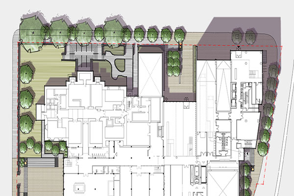

Petawawa Point Park Master Plan

Lashley + Associates was commissioned by the Town of Petawawa to develop a concept plan for the redevelopment of Petawawa Point Park with the purpose to restore and enhance the appearance and function of Petawawa’s premiere waterfront park. Using principles outlined in the Town’s Strategic Plan and in the Parks and Recreation Master Plan, the concept plan provides for a sustainable redevelopment of the Park to ensure that it can meet the current and future needs of the community. We worked closely with both the Town and the community throughout the design process to develop a concept plan that provides flexible programming opportunities that allow the Park to adapt to the current and future environmental conditions of the Park

In 2011 Lashley and Associates was commissioned by the City of Ottawa to develop a rehabilitation plan for a small park located on Rochester and Elm Street in downtown Ottawa. The park had been designed in the 1960s after a couple of City lots were combined to create this small and well-used park. The main purpose was to create an active space for children to play in the summer months. After many years of use the park had begun to tire and a need for a full redesign and revitalization was necessary.
Lashley + Associates was hired to develop concepts for the redesign of this small park. We felt that an aesthetic lift and vibrant colours/shapes should be implemented to create an imaginative space to play. The idea was to maintain the current uses but to create a place that could be better programmed. In the redesign, the park entrance is opened up, green spaces introduced in the form of grassy berms to sit or play on, a new custom decorative fence was designed for the front of the park, trees are planted and overhead structures introduced for shade, a new playground and pool have been redesigned and will also be implemented, and all of the storage will be located in the back corner of the park. We are currently in the construction phase of this project (summer 2013).

In 2011 Lashley and Associates was commissioned by the City to create a concept plan for Primrose Park. The challenge was to maintain existing uses while implementing new uses such as a splash pad, new playground, and streetscape. The goal was to maintain the existing drainage of the park while providing additional amenities that will provide for better overall use of the park space.
After a public consultation and feedback session, the concepts were further developed to better suit the needs of the community. A streetscape redesign has been implemented with shaded seating, multi-use tables and better visibility into the park. The play areas have been relocated toward the centre of the park to strengthen this relationship to Primrose avenue and creating better use of space within the park. This project is currently under construction (summer 2013).
Belanger Residence
Lashley + Associates was approached to design an outdoor residential kitchen that could be used for large gatherings and cook-outs. The design included a kitchen layout, overhead arbours with retractable shade coverings, a wood oven and stove, built in kitchen components, a movable bar, material selection, bluestone patio, cedar fencing, lounge area, and dining area.
This residential design consisted of the design and implementation of an edible garden, herb garden, floating deck with overhead arbour, coffee terrace, new front entrance, and a rain garden to solve some of the drainage issues that currently exist on the property. This garden was designed with punchy colours, creating seasonal interest, and providing an outdoor space that could be enjoyed by the owners.
Lush gardens, patios, walking paths, and a gazebo highlight this large residential care and seniors’ living complex in Bells Corners. The design created distinct areas on the site with naturalized and manicured areas to provide a variety of outdoor settings for the residents. The entrance courtyard includes a woodland planting of the traffic island with natural stonewalls creating a sense of privacy from the parking lots and street and a connection for the residents with nature.
Arts Court
Lashley + Associates was commissioned by Barry Padolsky Associates Inc. Architects and Kuwabara Payne McKenna Blumberg Architects (Joint Venture Architects) to create a design for the redevelopment of Arts Court. The design for Arts Court redevelopment would address schematic design options for usable outdoor courtyard spaces with multipurpose or sole-purpose use areas as well as creating unique and valuable urban spaces that will blend into the industrial and commercial fabric of the surrounding area. Priority was placed on creating a sustainable, pedestrian friendly, and functional design that would reflect the functions of the proposed complex.
The project features a large public plaza punctuated by a grove of aspen trees in a pedestrian garden bordered by unique stone and reclaimed dam timber seat/leaning and signage walls. The project targets LEED Silver accreditation and makes use of many innovative technologies. The urban landscape’s simple elegance will enhance the views of the architecture, the Canal and this significant urban spatial node. It also will be used to tell part of the story of Ottawa through pavement treatments and art that reflect the importance of lumbering and the Canal to the City.
The opportunity to impact the urban fabric of a city and make an iconic statement about a city’s history and future is reflected in the design for the new Ottawa Convention Centre. Working with PCL Constructors, BBB Architects, and other sub-consultants and trades, our firm helped the team to develop the winning design for the Convention Centre.
Our firm was commissioned by the Sparks Street Mall Authority to produce redevelopment concepts for the Sparks Street Mall, Blocks 1-4. Our approach involved gaining an understanding how Sparks Street and the Mall developed historically helped us to understand its place in Ottawa’s urban fabric, on the functional level and on the landscaped level as an outdoor area of respite.
The final concept design developed by L+A focuses on creating a contemporary place with a strong identity as a linear urban park and historic and cultural district. The concept directs visitors to Sparks Street as a recognizable destination within the urban fabric of the City.